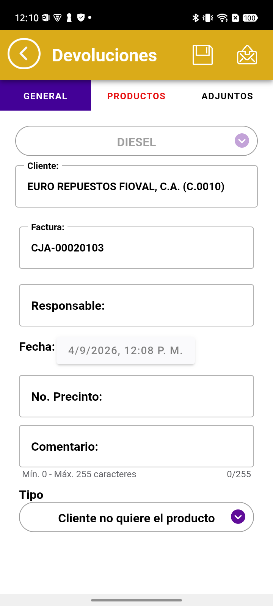
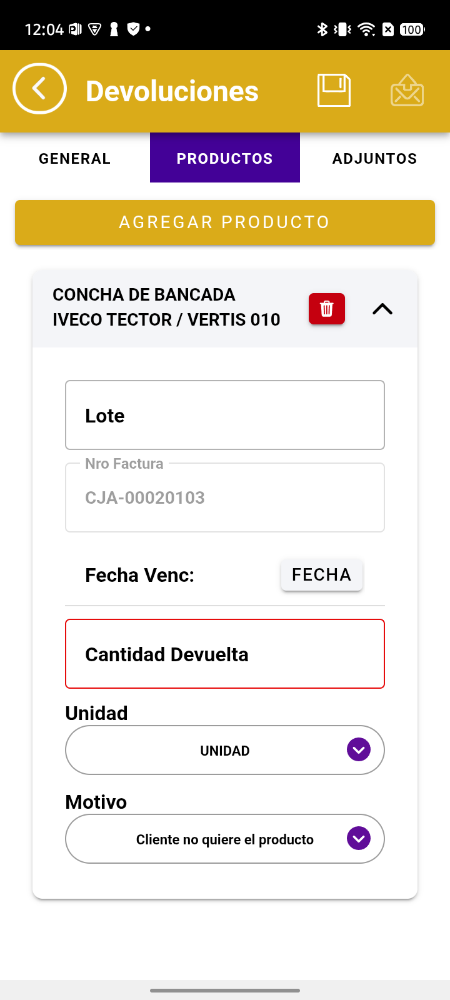

CONTROL DE CALIDADValidación de requerimiento
04/09/2026
04/09/2026
Requerimiento «Botón Enviar y campos obligatorios» · 7 módulos · IMPORTADORA 4K
| Qué se pedía | Que la aplicación no deje enviar una transacción con campos obligatorios vacíos, y que diga cuáles faltan |
| Módulos revisados | Clientes · Pedidos · Cobros · Inventarios · Devoluciones · Depósitos · Visitas |
| Versión | APK 6.6.21.3 (rama main) · servidor Caribe |
| Resultado | Los dos criterios se cumplen en los 7 módulos · 1 observación abierta |
| Módulo | Qué dice la aplicación cuando falta algo | No deja enviar | Dice qué falta |
|---|---|---|---|
| Clientes | «Nombre obligatorio.» y marca 8 campos en rojo | ✅ | ✅ |
| Pedidos | «Debe agregar al menos un producto al pedido.» + pestaña PEDIDO en rojo | ✅ | ✅ |
| Cobros | «Hay un método de pago incompleto…» + 3 mensajes bajo los campos | ✅ | ✅ |
| Inventarios | «Debe seleccionar al menos un producto…» + pestaña INVENTARIO en rojo | ✅ | ✅ |
| Devoluciones | «Debe agregar al menos un producto a la devolución.» | ✅ | ✅ |
| Depósitos | Guía paso a paso: banco → cobros → nº de planilla | ✅ | ✅ |
| Visitas | «Debe agregar al menos una actividad para poder enviar la visita» | ✅ | ✅ |
El vendedor lo describía así: «Le doy enviar, me dice FALTA X. Lleno X. Le doy enviar, me dice FALTA Y. Lleno Y. Luego la pestaña General sale en rojo pero no hay nada que falte ahí. Le doy enviar y sí me deja enviar.»
El rojo aparecía al corregir el último campo, no al fallar — y sobrevivía al envío que la propia aplicación aceptaba. No impedía trabajar, pero hacía dudar.
| Módulo | Antes (01/09) | Ahora (04/09) |
|---|---|---|
| Devoluciones | 🔴 pestaña General | ✅ ya no ocurre |
| Depósitos | 🔴 pestaña General | ✅ ya no ocurre |
| Inventarios | 🔴 pestaña Inventario | ✅ ya no ocurre |
| Cobros | 🔴 pestaña General | ✅ ya no ocurre |
| Pedidos · Visitas | nunca ocurrió | ✅ sigue bien |
Se repitió el recorrido exacto que producía el fallo. La diferencia está en el paso 6:
| Paso | Acción | Antes | Ahora |
|---|---|---|---|
| 1 | Enviar con el formulario vacío | General en rojo ✔ correcto | General en rojo ✔ correcto |
| 4 | Marcar el cobro a depositar | General en rojo ✔ correcto | General en rojo ✔ correcto |
| 6 | Llenar el nº de planilla — ya no falta nada | 🔴 General se queda roja | ✅ General en negro |
| 7 | Enviar | 🔴 sigue roja al confirmar | ✅ ninguna pestaña roja |

Qué NO es. No es la falsa alarma corregida: aquí sí falta algo (el producto). Y no incumple lo que pedía el requerimiento — la aplicación no deja enviar y dice qué falta. Lo que está mal es el momento: el aviso se hereda de la transacción anterior en vez de empezar limpio.
En Depósitos no pasa: un depósito nuevo abierto desde el listado nace sin ninguna marca.

| Dónde | Qué se observó |
|---|---|
| Devoluciones | El mensaje «La cantidad a devolver debe estar entre 1 y» termina ahí: no completa con el máximo permitido |
| Devoluciones · Visitas | La fila del producto y la pestaña reciben la marca internamente, pero no llegan a pintarse de rojo |
| Inventarios | El recuadro donde se captura el producto avisa qué falta, pero no resalta los campos |
| Aspecto | Detalle |
|---|---|
| Alcance | Aplicación móvil. El requerimiento se refiere a lo que ocurre antes de enviar, así que la prueba termina en el momento en que la aplicación acepta la transacción |
| Método | Recorrido manual conducido, módulo por módulo, con lectura directa del estado de la aplicación — no por apariencia |
| Sin efectos en los datos | Al llegar al aviso de confirmación se canceló. La única excepción fue un cobro enviado por error durante la prueba, en el ambiente de pruebas |
| Casos no evaluados | 10, cada uno con su motivo anotado (pestañas no aplicables al cliente, retención, capa web, multiempresa). Ninguno se dio por aprobado sin medir |


Queda una observación abierta, que no impide usar la aplicación: en Devoluciones el aviso se hereda de la transacción anterior y aparece antes de tiempo. Se recomienda corregirlo en una próxima entrega, porque puede confundir igual que la falsa alarma que se acaba de resolver.

req-boton-enviar-4k.md · 18 capturas de respaldo